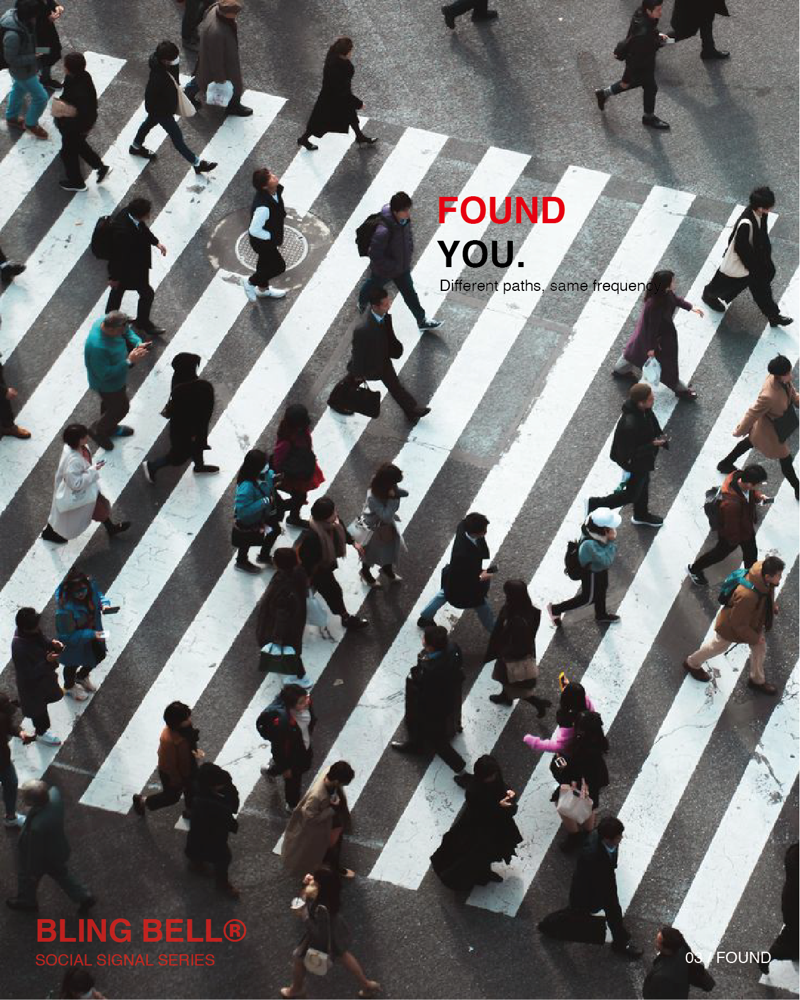
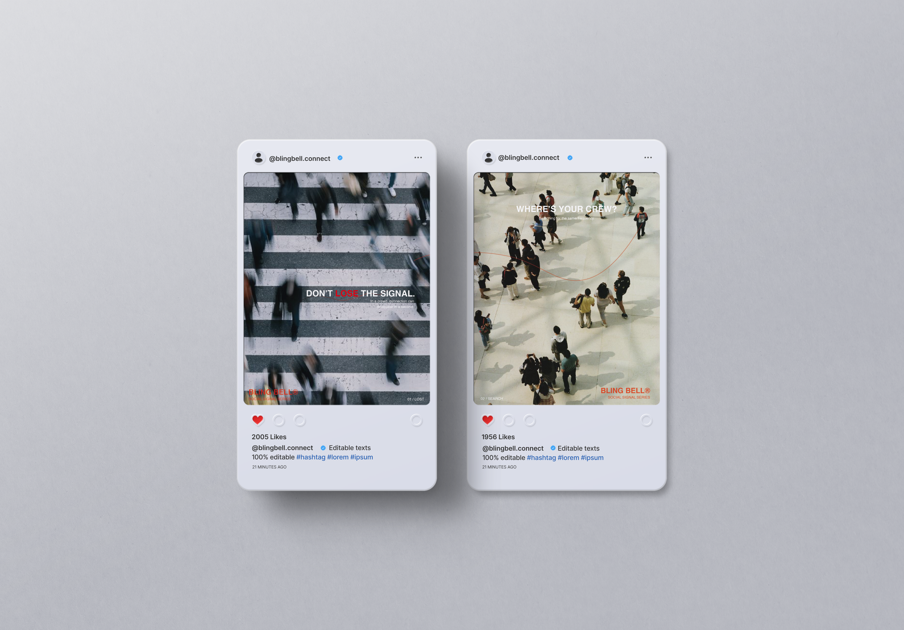
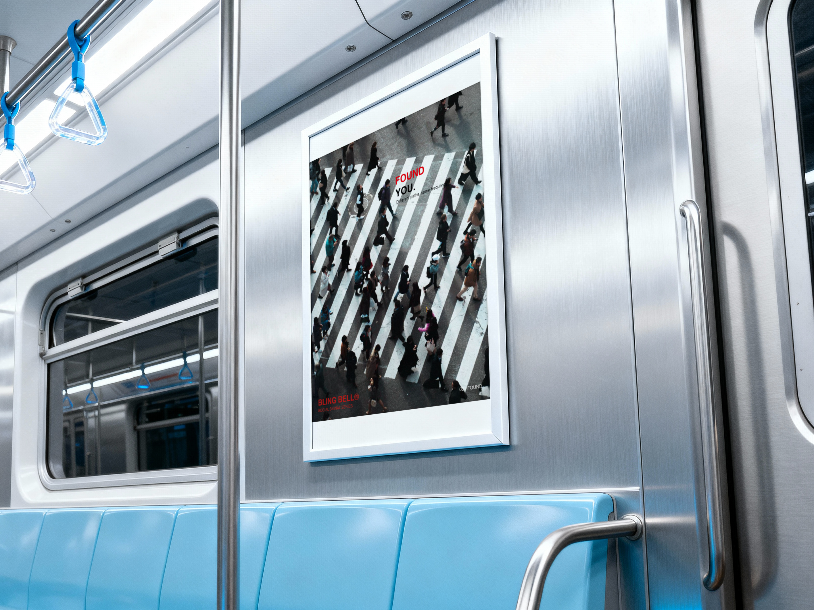

ONE CITY. A THOUSAND PATHS.
In a crowd,
we look for
something familiar.
A face. A feeling. Your people.
Follow the signal from lost to found.

FIND YOUR
PEOPLE.
ONE CITY. A THOUSAND PATHS.
A face. A feeling. Your people.
Follow the signal from lost to found.
01 / LOST
When the crowd gets louder, connection gets harder.
01 — SOCIAL SIGNAL SERIES02 / SEARCH
Follow the signal. Find the familiar.
02 — SOCIAL SIGNAL SERIES03 / FOUND
Different paths, same frequency.
03 — SOCIAL SIGNAL SERIES04 / CAMPAIGN SYSTEM
05 / SOCIAL × OUTDOOR


06 / VISUAL SYSTEM
Break → Search → Connect
Urban crowd. Low saturation.
Motion in the everyday.
Clean sans-serif.
Clear words. Familiar voices.
Black. White. Signal Red.